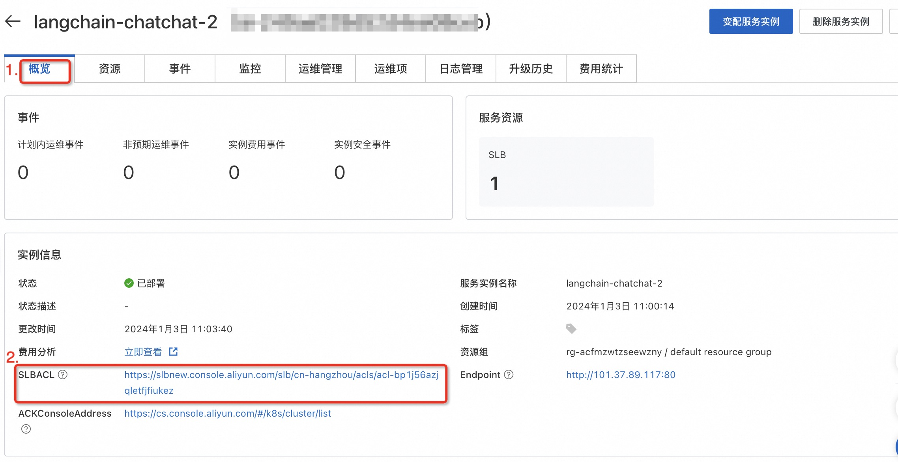

Langchain-chatchat服务部署文档
概述
Langchain-chatchat服务基于开源本地知识库问答项目Langchain-Chatchat,
集成了阿里云推理引擎DeepGPU-LLM，AnalyticDB for PostgreSQL向量数仓等产品，快速构建检索增强生成(RAG)大模型知识库项目。
本文向您介绍如何开通计算巢上的Demo服务，以及部署流程和使用说明。
注意事项
阿里云不对第三方模型的合法性、安全性、准确性进行任何保证，阿里云不对由此引发的任何损害承担责任。
您应自觉遵守第三方模型的用户协议、使用规范和相关法律法规，并就使用第三方模型的合法性、合规性自行承担相关责任。
部署架构
Langchain-chatchat由Nginx、Chat及LLM组成。
- Nginx：网关服务，负责将请求转发到Chat服务。
- Chat：ChatBot应用，支持LLM问答和知识库问答。Database用于存储知识库Embedding后的向量。Database支持
faiss及ADB两种类型。 - LLM：模型推理服务，基于开源的FastChat项目部署LLM模型。默认使用DeepGPU-LLM加速推理的qwen-7b-chat-aiacc模型。支持替换为其他开源模型或DeepGPU-LLM加速模型，替换模型可通过pvc挂载到容器中。
应用配置
部署参数说明
| 参数 | 描述 | 默认值 |
|---|---|---|
| ACK集群ID | ACK集群ID | 无 |
| 数据库类型 | 向量数据库类型。取值：faiss or adb。 | faiss |
| 应用登陆名 | Nginx登陆名称 | admin |
| 应用登陆密码 | Nginx登陆密码 | 无 |
| 应用白名单 | 可以访问应用的IP或者CIDR网段。 | 127.0.0.1 |
| 模型名称 | llm模型名称 | qwen-7b-chat-aiacc |
| 是否使用量化(8bit) | llm模型int8量化 | true |
| 模型PVC | 模型存储PVC，挂载到容器内/llm-model目录 | true |
| 知识库PVC | 已存在的PVC，用于保存本地知识库文件。如使用 | 无 |
| 实例类型 | 模型推理服务部署方式，取值：ecs or eci。ecs将应用部署到ECS节点上。eci将部署到ECI上（ACK Serverless集群请使用eci）。 | ecs |
修改应用白名单
应用白名单默认值为127.0.0.1，您可以通过以下方式修改。
新建服务
创建服务时可以指定应用白名单参数，建议添加本机公网出口地址（可通过浏览器访问ifconfig.me、myip.ipip.net获取），否则本机将无法访问服务。
已有服务
如果服务已经创建，可以在服务概览页面 > 实例信息点击SLBACL链接进行修改。SLBACL配置可参考访问控制。 
向量数据库
faiss
faiss是由facebook开源的一款内存向量库，项目地址https://github.com/facebookresearch/faiss。
faiss内存数据库部署在chat pod中，受chat pod的资源约束。如果使用faiss向量数据库，建议增加chat pod的内存资源。
AnalyticDB PostgreSQL (简称 ADB)
云原生数据仓库AnalyticDB
PostgreSQL版是一种大规模并行处理（MPP）数据仓库服务，可提供海量数据在线分析服务。产品简介请参考文档什么是云原生数据仓库。
Langchain-chatchat项目中使用的ADB需要满足以下条件：
- 需开启向量引擎优化功能
- 计算节点规格>=4C16G
embedding模型
应用内置的embedding模型为text2vec-bge-large-chinese，详情请参考hugging face文档。
chat应用默认使用CPU运行embedding模型，可通过在chat.pod.resources中申请GPU资源来提高文本向量化速度。
模型配置
支持的模型列表
| 模型类型 | 模型名称 | 容器内模型文件路径 |
|---|---|---|
| DeepGPU-LLM转换模型 | qwen-7b-chat-aiacc | /llm-model/qwen-7b-chat-aiacc |
| DeepGPU-LLM转换模型 | qwen-14b-chat-aiacc | /llm-model/qwen-14b-chat-aiacc |
| DeepGPU-LLM转换模型 | chatglm2-6b-aiacc | /llm-model/chatglm2-6b-aiacc |
| DeepGPU-LLM转换模型 | baichuan2-7b-chat-aiacc | /llm-model/baichuan2-7b-chat-aiacc |
| DeepGPU-LLM转换模型 | baichuan2-13b-chat-aiacc | /llm-model/baichuan2-13b-chat-aiacc |
| DeepGPU-LLM转换模型 | llama-2-7b-hf-aiacc | /llm-model/llama-2-7b-hf-aiacc |
| DeepGPU-LLM转换模型 | llama-2-13b-hf-aiacc | /llm-model/llama-2-13b-hf-aiacc |
| 开源模型 | qwen-7b-chat | /llm-model/Qwen-7B-Chat |
| 开源模型 | qwen-14b-chat | /llm-model/Qwen-14B-Chat |
| 开源模型 | chatglm2-6b | /llm-model/chatglm2-6b |
| 开源模型 | chatglm2-6b-32k | /llm-model/chatglm2-6b-32k |
| 开源模型 | baichuan2-7b-chat | /llm-model/Baichuan2-7B-Chat |
| 开源模型 | baichuan2-13b-chat | /llm-model/Baichuan2-13B-Chat |
| 开源模型 | llama-2-7b-hf | /llm-model/Llama-2-7b-hf |
| 开源模型 | llama-2-13b-hf | /llm-model/Llama-2-13b-hf |
使用DeepGPU-LLM转换模型
DeepGPU-LLM是阿里云研发的基于GPU云服务器的大语言模型（Large Language Model，LLM）推理引擎，旨在优化大语言模型在GPU云服务器上的推理过程，通过优化和并行计算等技术手段，提供免费的高性能、低延迟推理服务。DeepGPU-LLM使用方式请参考文档使用DeepGPU-LLM实现大语言模型在GPU上的推理优化。
Langchain-chatchat项目已安装DeepGPU-LLM，默认使用DeepGPU-LLM加速后的模型qwen-7b-chat-aiacc。
如想要使用DeepGPU-LLM对其他开源LLM模型进行推理优化，您需要先将huggingface格式的开源模型转换为DeepGPU-LLM支持的格式，然后才能使用DeepGPU_LLM进行模型的推理优化服务。以qwen-7b-chat为例，可使用如下命令在容器中进行模型格式转换：
#qwen-7b weight convert
huggingface_qwen_convert \
-in_file /llm-model/Qwen-7B-Chat \
-saved_dir /llm-model/qwen-7b-chat-aiacc \
-infer_gpu_num 1 \
-weight_data_type fp16 \
-model_name qwen-7b
更换模型
步骤一：创建静态PV及PVC
-
OSS模型
-
执行以下命令创建Secret。
kubectl create -f oss-secret.yaml
以下为创建Secret的oss-secret.yaml示例文件，需要指定akId和akSecret。
apiVersion: v1
kind: Secret
metadata:
name: oss-secret
namespace: default
stringData:
akId: <your AccessKeyID>
akSecret: <your AccessKeySecret>
- 执行以下命令创建静态卷PV。
kubectl create -f model-oss.yaml
以下为创建静态卷PV的model-oss.yaml示例文件，需要指定bucket,url等参数。
apiVersion: v1
kind: PersistentVolume
metadata:
name: model-oss
labels:
alicloud-pvname: model-oss
spec:
capacity:
storage: 30Gi
accessModes:
- ReadOnlyMany
persistentVolumeReclaimPolicy: Retain
csi:
driver: ossplugin.csi.alibabacloud.com
volumeHandle: model-oss
nodePublishSecretRef:
name: oss-secret
namespace: default
volumeAttributes:
bucket: "<your bucket name>"
url: "<your oss endpoint>" # oss-cn-hangzhou.aliyuncs.com
otherOpts: "-o umask=022 -o max_stat_cache_size=0 -o allow_other"
path: "/"
- 执行以下命令创建静态卷PVC。
kubectl create -f pvc-oss.yaml
以下为创建静态卷PVC的model-pvc.yaml示例文件。
apiVersion: v1
kind: PersistentVolumeClaim
metadata:
name: model-pvc
spec:
accessModes:
- ReadOnlyMany
resources:
requests:
storage: 30Gi
selector:
matchLabels:
alicloud-pvname: model-oss
参数配置可参考使用OSS静态存储卷。
-
NAS模型
-
执行以下命令创建静态卷PV。
kubectl create -f model-nas.yaml
以下为创建静态卷PV的model-nas.yaml示例文件，需要指定NAS服务地址和路径。
apiVersion: v1
kind: PersistentVolume
metadata:
name: model-nas
labels:
alicloud-pvname: model-nas
spec:
capacity:
storage: 30Gi
accessModes:
- ReadWriteMany
csi:
driver: nasplugin.csi.alibabacloud.com
volumeHandle: model-nas
volumeAttributes:
server: "<your nas server>"
path: "<your model path>"
mountOptions:
- nolock,tcp,noresvport
- vers=3
- 执行以下命令创建静态卷PVC。
kubectl create -f model-pvc.yaml
以下为创建静态卷PVC的model-pvc.yaml示例文件。
kind: PersistentVolumeClaim
apiVersion: v1
metadata:
name: model-pvc
spec:
accessModes:
- ReadWriteMany
resources:
requests:
storage: 30Gi
selector:
matchLabels:
alicloud-pvname: model-nas
参数配置可参考使用NAS静态存储卷。
步骤二：更新Helm Value
- 控制台点击变配服务实例。
- 选择Chart Values变更
- 填写
Model为新的模型名称，模型PVC为存储新模型的pvc名称。模型名称及模型挂载路径参考支持的模型列表。
Release Note
| 版本号 | 变更时间 | 变更内容 |
|---|---|---|
0.1.0 |
2023年12月26日 | 支持阿里云推理引擎DeepGPU-LLM，AnalyticDB for PostgreSQL向量数仓 |